These are all my pet rats I have owned so far. Sadly, all of these rats
have passed on but I have so many wonderful memories with all my pet rats.
I raised Oreo from a baby, and adopted Audia to be her sister not long
after. Rats live an average of 2 years, which is why I have had so many
as pets in the last decade. I enjoy raising them from babies because they
get plenty of human interaction that way and are much more trusting and
friendly as they grow up. Plus, they are just so cute when they are babies
with baby fur! After raising Oreo and Audia, the cycle continued over the
years and I have enjoyed all my rats for their awesome personalities and
unique attributes. Sadly, all of these rats have passed on, Noodle and Pookie
were the most recent to pass in January 2020. I have so many wonderful
memories with all my pet rats and I am very excited to be able to remember
and share these memories through this webpage.
Nina
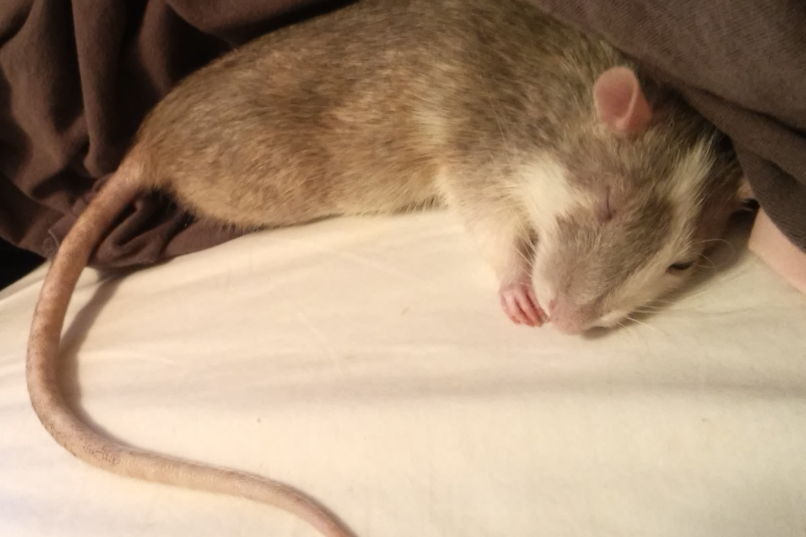
Nina would often sleep in my bed as I did my homework or watched
movies. She was a grey rat with white marbling and a white belly.
She was a snuggler and loved nap time very much. She also loved
being scratched behind the ears as many rats do.
Choobie
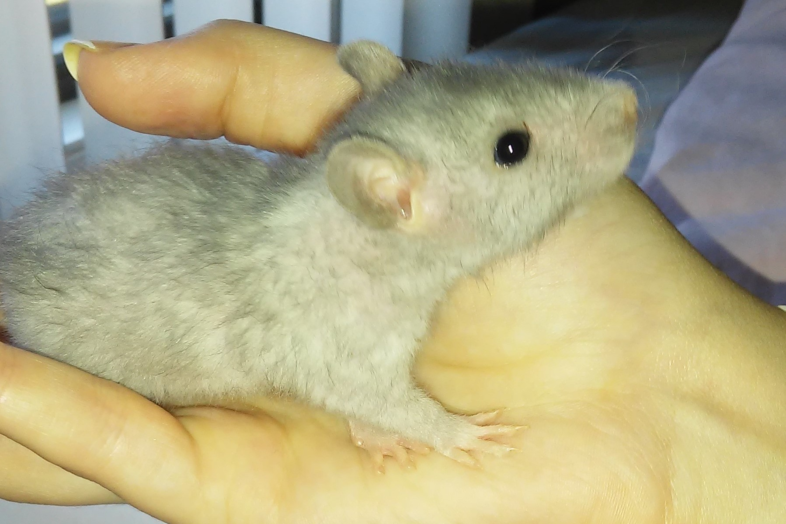
I knew as soon as I saw Choobie as a baby that she was special.
She was a Blue Rex Rat. Her fur color is Blue, and she has
curly whiskers and wavy thick fur. The color "Blue" in the rat
breeding industry describes a specific shade of grey with a blue hue.
Pooch
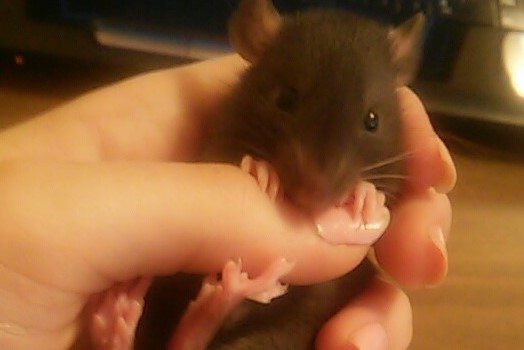
Pooch was a very energetic baby, but I got her to sit still for
this photo by letting her chew on my nail polish. She was a very
athletic rat who loved to run and play. She could climb up almost
anything and her sister Choobie was the same way.
Tilly
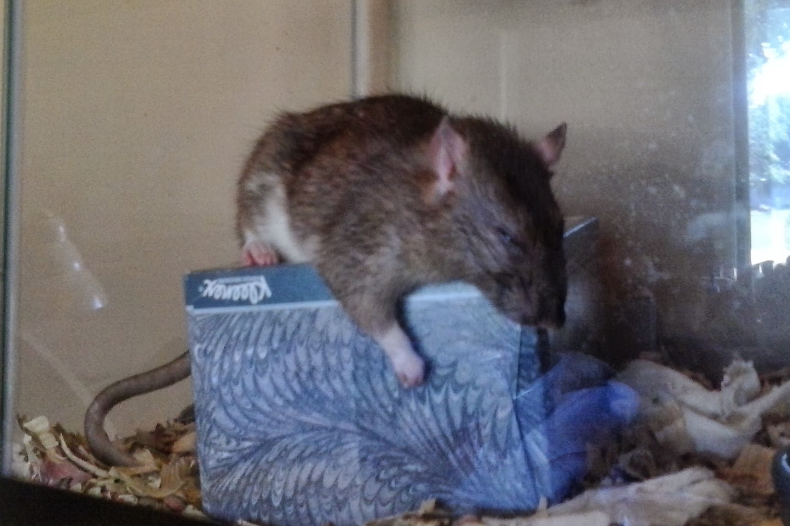
I adopted Tilly admittedly for her unique coloring. I loved the
brown fur with black mixed in. She also had a white belly and white
paws, which was a very cute look. She had a couple ear infections,
but this didn't prevent her from having a full and happy life.
Marley, Fidget, and Devlin
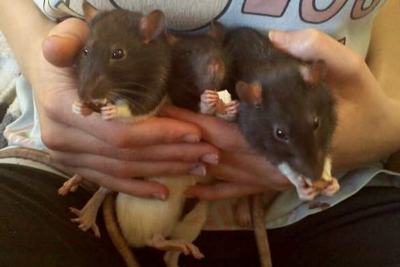
These are my boys; Marley, Fidget, Devlin. I have a special place
in my heart for my boys, they were so affectionate and fun. I
adopted them when my brother's rat, which he bought from a pet
store, gave birth to a litter of pups.
Nugget
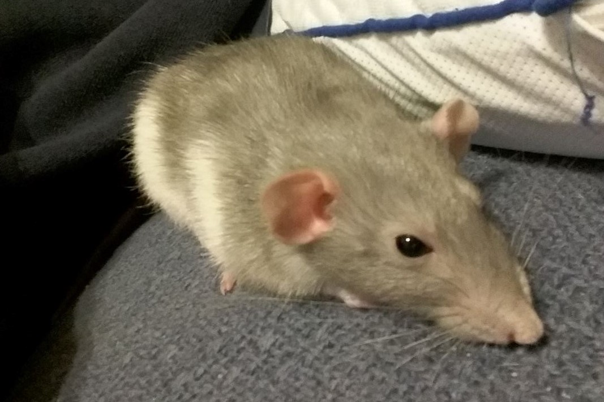
Nugget was also a unique rat due to her attributes. Her ears
were set a little towards the sides of her head, rather than on
top, which classifies her as a "Dumbo" rat. She loved being pet, and
I have many pictures of her on her back as I rub her belly.
Audia
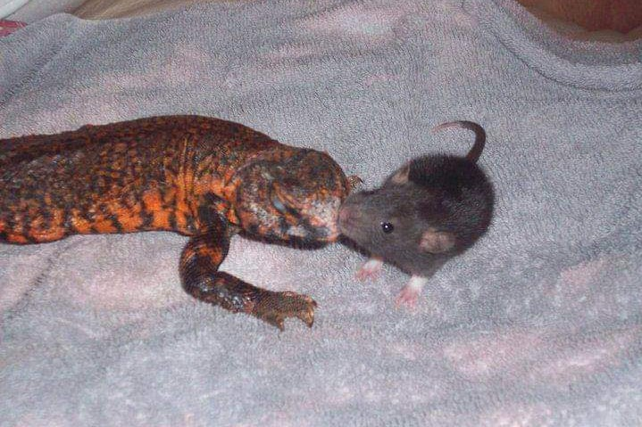
This is Audia, as a baby, hanging out with my brother's lizard.
It's called a Uromastyx Lizard and they are primarily herbivorous.
Not pictured is Audia's brother who, unfortunately, died as a baby
when one of my brother’s snakes escaped it's cage.
Oreo
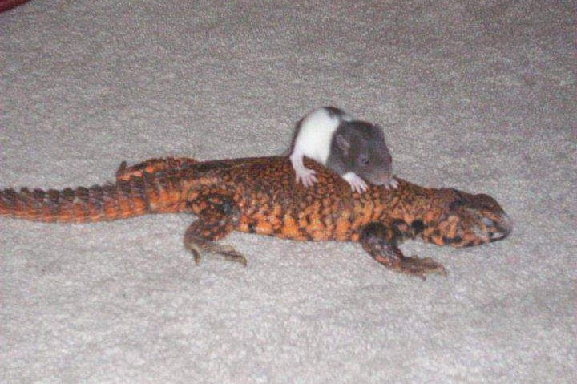
This is baby Oreo on the lizard's back, going for a little ride.
Oreo was the first rat I ever adopted so I was nervous for this first
rat-to-lizard introduction. But it went very well, and the lizard
carried her around for quite some time.
Peaches
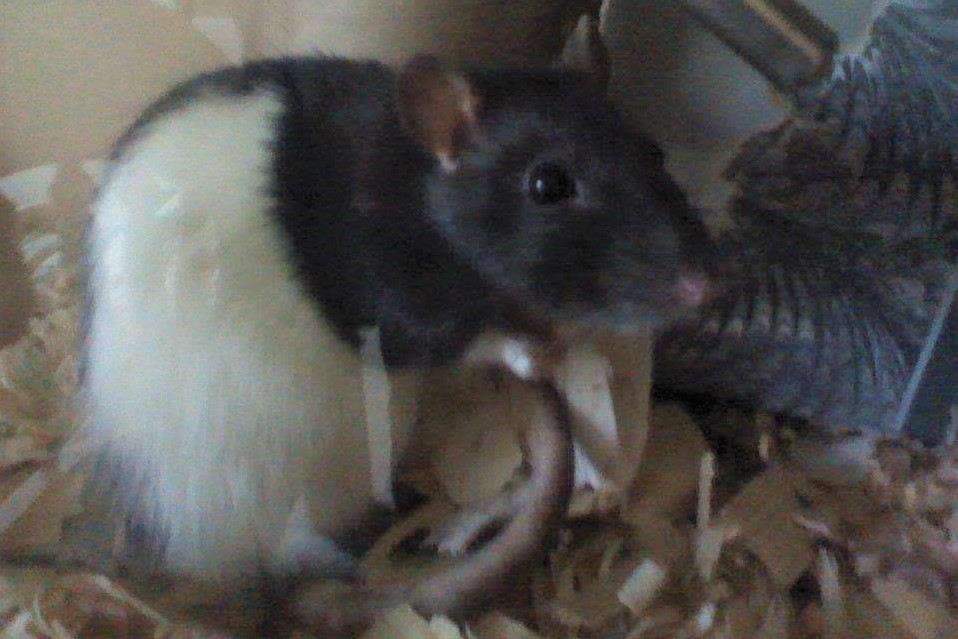
Female rats tend to be smaller than male rats, but Peaches was the
most petite of all my rats. She never never liked being in her cage
and would chew on everything until I took her out. At least her teeth
stayed trimmed, they grow continuously throughout a rat’s life.
Insieme, Jacob, Aldabella
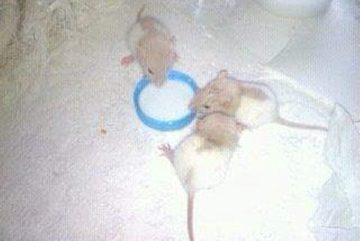
The three blonde rats, as babies, are drinking from a bowl of warm
milk. Aldabella was technically my sisters’ rat, but these three rat
siblings got to grow up together. Jacob was a very shy guy, Insieme
was a very loving rat, and Aldabella was fed very well and loved to
show off her big tummy.
Noodle
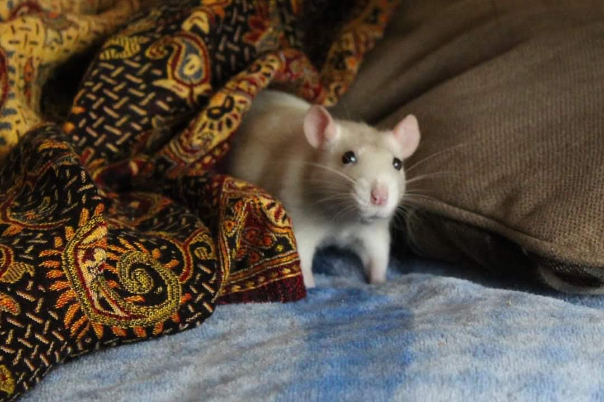
Me or my sister probably called Noodle out to come get a treat
from us. Most of my rats were trained to know that when we made
kissy noises, they should come to us.They were motivated by food to
do this. Rats are very intelligent and can learn all kinds of tricks.
Pookie
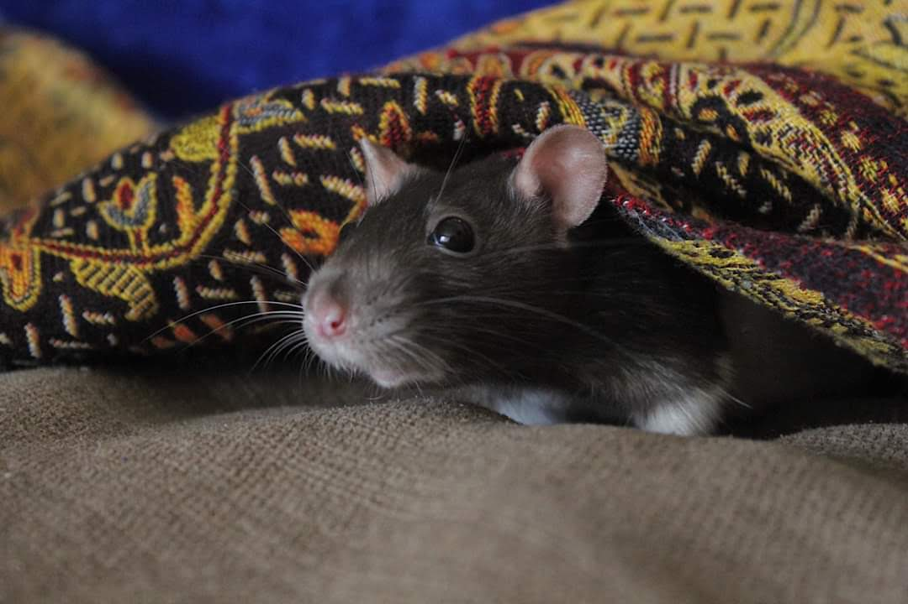
Pookie was relaxing and poked her head out to say "hi" to the camera.
My sister helped take care of Pookie and Noodle when I had to move
closer to the city for school. They were extra spoiled because of this
and both had wonderful lives.
Thank you for checking out my webpage! I hope you enjoyed learning
about something that you may have previously not known much about. Maybe
for some people this was a bit of an eye opener that domesticated rats
are a great option for a pet and the stigma behind rats is not
necessarily true. I thoroughly loved all my rats and found great
joy in giving them spoiled lives rather than being doomed to be snake
food.